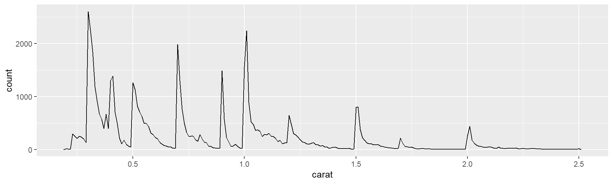
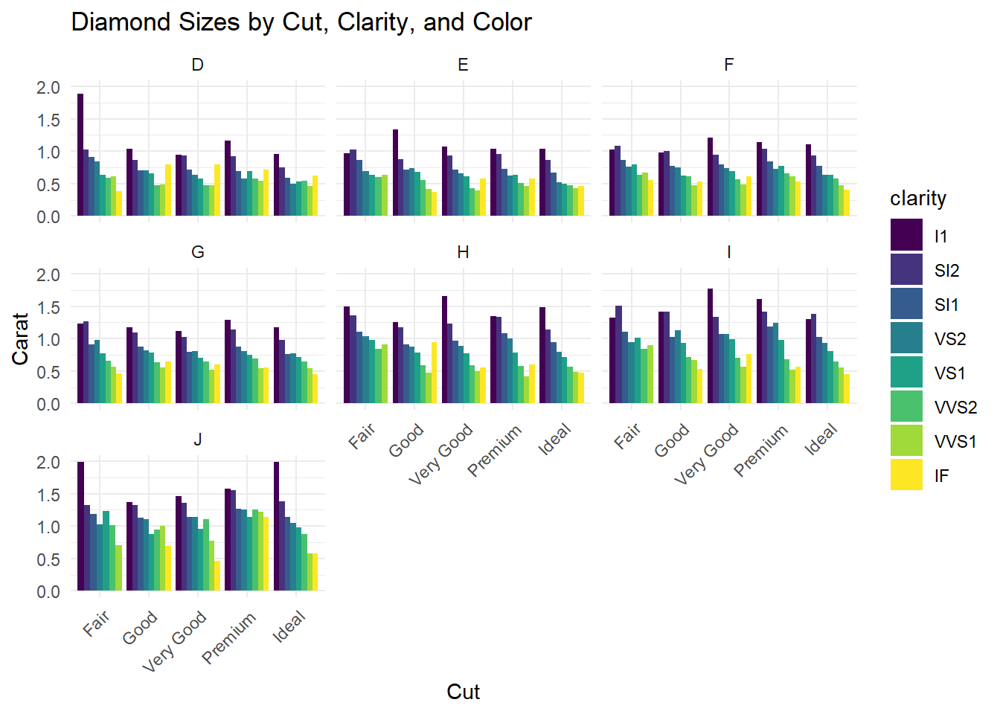

R4DS_2E_quarto_codeChunks
Quarto - Code Chunks
We have data about 53,940 diamonds. Only 126 are larger than 2.5 carats. This means that only 0.23% of diamonds are larger than 2.5 carats. The distribution of the remainder is shown in Figure 1
Lets take a closer look at the 20 largest diamonds
# A tibble: 20 × 6
carat depth x y z price
<dbl> <dbl> <dbl> <dbl> <dbl> <int>
1 5.01 65.5 10.7 10.5 6.98 18018
2 4.5 65.8 10.2 10.2 6.72 18531
3 4.13 64.8 10 9.85 6.43 17329
4 4.01 61 10.1 10.1 6.17 15223
5 4.01 62.5 10.0 9.94 6.24 15223
6 4 63.3 10.0 9.94 6.31 15984
7 3.67 62.4 9.86 9.81 6.13 16193
8 3.65 67.1 9.53 9.48 6.38 11668
9 3.51 62.5 9.66 9.63 6.03 18701
10 3.5 62.8 9.65 9.59 6.03 12587
11 3.4 66.8 9.42 9.34 6.27 15964
12 3.24 62.1 9.44 9.4 5.85 12300
13 3.22 62.6 9.49 9.42 5.92 12545
14 3.11 65.9 9.15 9.02 5.98 9823
15 3.05 60.9 9.26 9.25 5.66 10453
16 3.04 63.2 9.14 9.07 5.75 15354
17 3.04 59.3 9.51 9.46 5.62 18559
18 3.02 65.2 9.11 9.02 5.91 10577
19 3.01 62.7 9.1 8.97 5.67 8040
20 3.01 62.2 9.24 9.13 5.73 9925We can see that the dimensions are obviously going to be the most important variables in defining the carat size as they are directly related to each other. Higher prices can also be a general indication into how large the diamond is.
Now lets look at diamond sizes and how they vary by cut, color and clarity


- Open
diamond-sizes.qmdin the visual editor, insert a code chunk, and add a table withknitr::kable()that shows the first 5 rows of thediamondsdata frame
| carat | cut | color | clarity | depth | table | price | x | y | z |
|---|---|---|---|---|---|---|---|---|---|
| 0.23 | Ideal | E | SI2 | 61.5 | 55 | 326 | 3.95 | 3.98 | 2.43 |
| 0.21 | Premium | E | SI1 | 59.8 | 61 | 326 | 3.89 | 3.84 | 2.31 |
| 0.23 | Good | E | VS1 | 56.9 | 65 | 327 | 4.05 | 4.07 | 2.31 |
| 0.29 | Premium | I | VS2 | 62.4 | 58 | 334 | 4.20 | 4.23 | 2.63 |
| 0.31 | Good | J | SI2 | 63.3 | 58 | 335 | 4.34 | 4.35 | 2.75 |
- Display the same table with
gt::gt()instead. See Table 1
| carat | cut | color | clarity | depth | table | price | x | y | z |
|---|---|---|---|---|---|---|---|---|---|
| 0.23 | Ideal | E | SI2 | 61.5 | 55 | 326 | 3.95 | 3.98 | 2.43 |
| 0.21 | Premium | E | SI1 | 59.8 | 61 | 326 | 3.89 | 3.84 | 2.31 |
| 0.23 | Good | E | VS1 | 56.9 | 65 | 327 | 4.05 | 4.07 | 2.31 |
| 0.29 | Premium | I | VS2 | 62.4 | 58 | 334 | 4.20 | 4.23 | 2.63 |
| 0.31 | Good | J | SI2 | 63.3 | 58 | 335 | 4.34 | 4.35 | 2.75 |
- Add a chunk label that starts with the prefix
tbl-and add a caption to the table with the chunk optiontbl-cap. Then, edit the text above the code chunk to add a cross-reference to the table with Insert > Cross Reference.
- Set up a network of chunks where
ddepends oncandb, and bothbandcdepend ona. Have each chunk printlubridate::now(), setcache: true, then verify your understanding of caching.
Warning: tz(): Don't know how to compute timezone for object of class numeric;
returning "UTC".[1] "2024-01-17 15:43:37 GMT"[1] "2024-01-17 17:39:47 GMT"[1] "2024-01-17 15:43:37 GMT"[1] "2024-01-17 15:35:53 GMT"